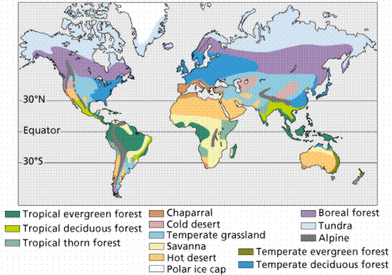
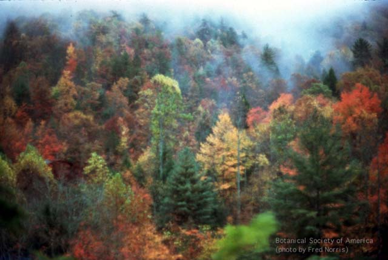
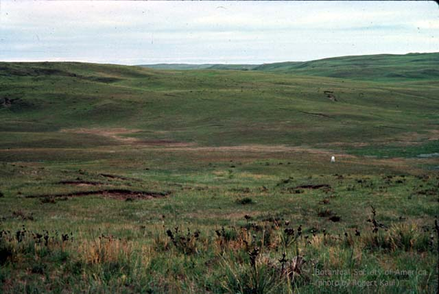
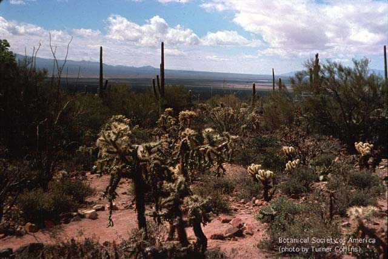
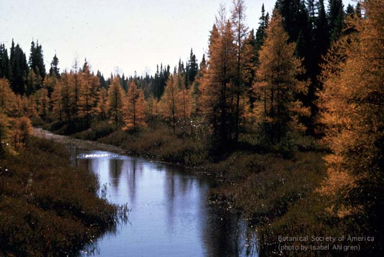
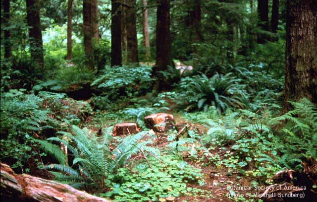
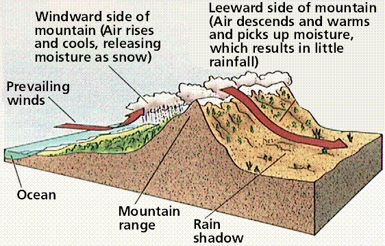
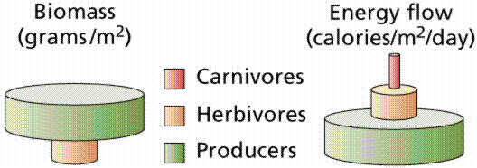

Definitions | Community Structure | Classification of Communities | Community Density and Stability |
Change in Communities Over Time | Ecosystems and Communities | Links
A community is the set of all populations that inhabit a certain area. Communities can have different sizes and boundaries. These are often identified with some difficulty.
An ecosystem is a higher level of organization the community plus its physical environment. Ecosystems include both the biological and physical components affecting the community/ecosystem. We can study ecosystems from a structural view of population distribution or from a functional view of energy flow and other processes.
Ecologists find that within a community many populations are not randomly distributed. This recognition that there was a pattern and process of spatial distribution of species was a major accomplishment of ecology. Two of the most important patterns are open community structure and the relative rarity of species within a community.
Do species within a community have similar geographic range and density peaks? If they do, the community is said to be a closed community, a discrete unit with sharp boundaries known as ecotones. An open community, however, has its populations without ecotones and distributed more or less randomly.
In a forest, where we find an open community structure, there is a gradient of soil moisture. Plants have different tolerances to this gradient and occur at different places along the continuum. Where the physical environment has abrupt transitions, we find sharp boundaries developing between populations. For example, an ecotone develops at a beach separating water and land.
Open structure provides some protection for the community. Lacking boundaries, it is harder for a community to be destroyed in an all or nothing fashion. Species can come and go within communities over time, yet the community as a whole persists. In general, communities are less fragile and more flexible than some earlier concepts would suggest.
Most species in a community are far less abundant than the dominant species that provide a community its name: for example oak-hickory, pine, etc. Populations of just a few species are dominant within a community, no matter what community we examine. Resource partitioning is thought to be the main cause for this distribution.
There are two basic categories of communities: terrestrial (land) and aquatic (water). These two basic types of community contain eight smaller units known as biomes. A biome is a large-scale category containing many communities of a similar nature, whose distribution is largely controlled by climate
Figure 1. Major terrestrial
biomes. Image from Purves et al.,
Life: The Science of Biology, 4th Edition, by Sinauer
Associates (www.sinauer.com)
and WH Freeman (www.whfreeman.com),
used with permission. 
The tundra and desert biomes occupy the most extreme environments, with little or no moisture and extremes of temperature acting as harsh selective agents on organisms that occupy these areas. These two biomes have the fewest numbers of species due to the stringent environmental conditions. In other words, not everyone can live there due to the specialized adaptations required by the environment.
Tropical rain forests occur in regions near the equator. The climate is always warm (between 20° and 25° C) with plenty of rainfall (at least 190 cm/year). The rain forest is probably the richest biome, both in diversity and in total biomass. The tropical rain forest has a complex structure, with many levels of life. More than half of all terrestrial species live in this biome. While diversity is high, dominance by a particular species is low. Typical tropical rain forest views are shown in Figure 2.
While some animals live on the ground, most rain forest animals live in the trees. Many of these animals spend their entire life in the forest canopy. Insects are so abundant in tropical rain forests that the majority have not yet been identified. Charles Darwin noted the number of species found on a single tree, and suggested the richness of the rain forest would stagger the future systematist with the size of the catalogue of animal species found there. Termites are critical in the decomposition and nutrient cycling of wood. Birds tend to be brightly colored, often making them sought after as exotic pets. Amphibians and reptiles are well represented. Lemurs, sloths, and monkeys feed on fruits in tropical rain forest trees. The largest carnivores are the cats (jaguars in South America and leopards in Africa and Asia). Encroachment and destruction of habitat put all these animals and plants at risk.
Epiphytes are plants that grow on other plants. These epiphytes have their own roots to absorb moisture and minerals, and use the other plant more as an aid to grow taller. Some tropical forests in India, Southeast Asia, West Africa, Central and South American are seasonal and have trees that shed leaves in dry season. The warm, moist climate supports high productivity as well as rapid decomposition of detritus.
With its yearlong growing season, tropical forests have a rapid cycling of nutrients. Soils in tropical rain forests tend to have very little organic matter since most of the organic carbon is tied up in the standing biomass of the plants. These tropical soils, termed laterites, make poor agricultural soils after the forest has been cleared.
About 17 million hectares of rain forest are destroyed each year (an area equal in size to Washington state). Estimates indicate the forests will be destroyed (along with a great part of the Earth's diversity) within 100 years. Rainfall and climate patterns could change as a result.
Figure 2. Top
image: Costa Rican cloud forest. Image from the Botanical
Society of America website, http://images.botany.org/bsa/set-01/01-197v.jpg.
Bottom image: Tropical rainforest in Puerto Rico. Image from
the Botanical Society of America website, http://images.botany.org/set-01/01-140v.jpg.
The temperate forest biome occurs south of the taiga in eastern North America, eastern Asia, and much of Europe. Rainfall is abundant (30-80 inches/year; 75-150 cm) and there is a well-defined growing season of between 140 and 300 days. The eastern United States and Canada are covered (or rather were once covered) by this biome's natural vegetation, the eastern deciduous forest. Dominant plants include beech, maple, oak; and other deciduous hardwood trees. Trees of a deciduous forest have broad leaves, which they lose in the fall and grow again in the spring. A scenic view of this type of biome is shown in Figure 3.
Figure 3. Fall
color in the eastern deciduous forest. Note the presence of
a few evergreens among the hardwoods. Image from the
Botanical Society of America website, http://images.botany.org/bsa/set-01/01-036v.jpg. 
Sufficient sunlight penetrates the canopy to support a well-developed understory composed of shrubs, a layer of herbaceous plants, and then often a ground cover of mosses and ferns. This stratification beneath the canopy provides a numerous habitats for a variety of insects and birds. The deciduous forest also contains many members of the rodent family, which serve as a food source for bobcats, wolves, and foxes. This area also is a home for deer and black bears. Winters are not as cold as in the taiga, so many amphibian and reptiles are able to survive.
The shrubland biome is dominated by shrubs with small but thick evergreen leaves that are often coated with a thick, waxy cuticle, and with thick underground stems that survive the dry summers and frequent fires. Shrublands occur in parts of South America, western Australia, central Chile, and around the Mediterranean Sea. Dense shrubland in California, where the summers are hot and very dry, is known as chaparral, shown in Figure 4. This Mediterranean-type shrubland lacks an understory and ground litter, and is also highly flammable. The seeds of many species require the heat and scarring action of fire to induce germination.
Figure 4.
Chaparral vegetation (predominantly
Adenostema) in California. Image from the Botanical
Society of America website, http://images.botany.org/bsa/set-01/01-110v.jpg.
Grasslands occur in temperate and tropical areas with reduced rainfall (10-30 inches per year) or prolonged dry seasons. Grasslands occur in the Americas, Africa, Asia, and Australia. Soils in this region are deep and rich and are excellent for agriculture. Grasslands are almost entirely devoid of trees, and can support large herds of grazing animals. Natural grasslands once covered over 40 percent of the earth's land surface. In temperate areas where rainfall is between 10 and 30 inches a year, grassland is the climax community because it is too wet for desert and too dry for forests.
Most grasslands have now been utilized to grow crops, especially wheat and corn. Grasses are the dominant plants, while grazing and burrowing species are the dominant animals. The extensive root systems of grasses allows them to recover quickly from grazing, flooding, drought, and sometimes fire.
Temperate grasslands include the Russian steppes, the South American pampas, and North American prairies. A tall-grass prairie occurs where moisture is not quite sufficient to support trees. A short-grass-prairie, shown in Figure 5, survives on less moisture and occurs between a tall-grass prairie and desert. A desert grassland is shown in Figure 6.
Figure 5. Short
grass prairie, Nebraska. Image from the Botanical Society of
America website, http://images.botany.org/bsa/set-01/01-068v.jpg. 
Figure 6. A desert grassland in
southeastern Arizona. Image from the Botanical Society of
America website, http://images.botany.org/set-01/01-177v.jpg.
Animal life includes mice, prairie dogs, rabbits, and animals that feed on them (hawks and snakes). Prairies once contained large herds of buffalo and pronghorn antelope, but with human activity these once great herds ahve dwindled.
The savanna is a tropical grassland that contains some trees. The savanna contains the greatest variety and numbers of herbivores (antelopes, zebras, and wildebeests, among others). This environment supports a large population of carnivores (lions, cheetahs, hyenas, and leopards). Any plant litter not consumed by grazers is attacked by termites and other decomposers. Once again, human activities are threatening this biome, reducing the range for herbivores and carnivores. Will extinction of the great cats be a result?
Deserts are characterized by dry conditions (usually less than 10 inches per year; 25 cm) and a wide temperature range. The dry air leads to wide daily temperature fluctuations from freezing at night to over 120 degrees during the day. Most deserts occur at latitudes of 30o N or S where descending air masses are dry. Some deserts occur in the rainshadow of tall mountain ranges or in coastal areas near cold offshore currents. Plants in this biome have developed a series of adaptations (such as succulent stems, and small, spiny, or absent leaves) to conserve water and deal with these temperature extremes. Photosynthetic modifications (CAM) are another strategy to life in the drylands.
The Sahara and a few other deserts have almost no vegetation. Most deserts, however, are home to a variety of plants, all adapted to heat and lack of abundant water (succulents and cacti). A view of the Sonoran desert vegetation type in Arizona is shown by Figure 7. Animal life of the Sonoran desert includes arthropods (especially insects and spiders), reptiles (lizards and snakes), running birds (the roadrunner of the American southwest and Warner Brothers cartoon fame), rodents (kangaroo rat and pack rat), and a few larger birds and mammals (hawks, owls, and coyotes).
Figure 7. Saguaro
and cholla cacti in association with palo verde trees in the
Sonoran desert, AZ. Note the lack of a canopy and the
scarcity of ground cover. Image from the Botanical Society
of America website, http://images.botany.org/bsa/set-01/01-097v.jpg.

The taiga (pronounced "tie-guh" and shown in Figure 8) is a coniferous forest extending across most of the northern area of northern Eurasia and North America. This forest belt also occurs in a few other areas, where it has different names: the montane coniferous forest when near mountain tops; and the temperate rain forest along the Pacific Coast as far south as California. The taiga receives between 10 and 40 inches of rain per year and has a short growing season. Winters are cold and short, while summers tend to be cool. The taiga is noted for its great stands of spruce, fir, hemlock, and pine. These trees have thick protective leaves and bark, as well as needlelike (evergreen) leaves can withstand the weight of accumulated snow. Taiga forests have a limited understory of plants, and a forest floor covered by low-lying mosses and lichens. Conifers, alders, birch and willow are common plants; wolves, grizzly bears, moose, and caribou are common animals. Dominance of a few species is pronounced, but diversity is low when compared to temperate and tropical biomes.
Figure 8. Top image: Taiga, Glacial River
in Alaska. Image from the Botanical Society of America
website, http://images.botany.org/set-01/01-002v.jpg;
Middle image of a Larix-dominated area of the taiga
biome. Image from the Botanical Society of America website,
http://images.botany.org/bsa/set-01/01-027v.jpg;
Bottom image: Temperate rain forest, Washington. Note the
dense understory of ferns and herbaceous
plants. Image
from the Botanical Society of America website,
http://images.botany.org/bsa/set-01/01-134v.jpg.  
The tundra, shown in Figure 9, covers the northernmost regions of North America and Eurasia, about 20% of the Earth's land area. This biome receives about 20 cm (8-10 inches) of rainfall annually. Snow melt makes water plentiful during summer months. Winters are long and dark, followed by very short summers. Water is frozen most of the time, producing frozen soil, permafrost. Vegetation includes no trees, but rather patches of grass and shrubs; grazing musk ox, reindeer, and caribou exist along with wolves, lynx, and rodents. A few animals highly adapted to cold live in the tundra year-round (lemming, ptarmigan). During the summer the tundra hosts numerous insects and migratory animals. The ground is nearly completely covered with sedges and short grasses during the short summer. There are also plenty of patches of lichens and mosses. Dwarf woody shrubs flower and produce seeds quickly during the short growing season. The alpine tundra occurs above the timberline on mountain ranges, and may contain many of the same plants as the arctic tundra.
Figure 9. Top
image: View of the tundra, locality unknown. Image from
http://ths.sps.lane.edu/biomes/tundra3/tundra3.html.
Bottom image: Caribou, an animal
characteristic of the tundra. Image
from http://ths.sps.lane.edu/biomes/tundra4/tundra4a.html.
Climate controls biome distribution by an altitudinal gradient and a latitudinal gradient. With increases of either altitude or latitude, cooler and drier conditions occur. Cooler conditions can cause aridity since cooler air can hold less water vapor than can warmer air. This is shown by Figure 10.
Figure 10. Effect of temperature on
precipitation. Image from Purves et al., Life: The
Science of Biology, 4th Edition, by Sinauer Associates
(www.sinauer.com)
and WH Freeman (www.whfreeman.com),
used with permission.
Deserts can occur in warm areas due to a blockage of air circulation patterns that form a rain shadow, or from atmospheric circulation patters as shown in Figure 11. Warm air rises, producing low pressure areas. Cooler air sinks, producing high pressure areas. The tropics tend to be atmospheric low pressure zones the arctic areas atmospheric highs. Relative humidity is a measure of how much water an air mass at a given temperature can hold. In short, warm air can hold more moisture than can cold air. This basic physical feature of air helps explain the distribution of some of the world's great deserts.
The warm, moist air masses in the tropics rise upward in the atmosphere as they heat. The pressure of air rising forces air in the upper atmosphere to flow away north and south. This air at higher elevations is cooler and loses much of its moisture as rainfall. When the air masses begin to descend they heat up and begin to draw moisture from the lands they descend upon, at 30 degrees north and south of the equator. Many of the world's deserts are at approximately 30 degrees latitude, as shown in Figure 11..
Rain shadow deserts also form when cool, dry air masses descend after passing over a tall mountain range, such as the Coast Range and Sierras in California. The Sonoran desert in Arizona (shown in Figure 7) is a doubly caused desert, being at 30 degrees latitude as well as in the rain shadow of California mountains. The Tian Shan desert in China is a typical rain shadow desert, as shown by Figure 12.
Figure 11. Top image: Air circulation
patterns and the global distribution of wet and dry
areas. Image from Purves et al.,
Life: The Science of Biology, 4th Edition, by Sinauer
Associates (www.sinauer.com)
and WH Freeman (www.whfreeman.com),
used with permission. Bottom image: Rainshadows and deserts.
Image from Purves et al., Life: The Science of
Biology, 4th Edition, by Sinauer Associates
(www.sinauer.com)
and WH Freeman (www.whfreeman.com),
used with permission. 
Figure 12. The Turpan Depression in the
Tian Shan desert of China, as viewed from space. In this
iamge vegetation is red, and basre desert is grey-light
blue. Image from http://pubs.usgs.gov/gip/deserts/types/.
Conditions in water are generally less harsh than those on land. Aquatic organisms are buoyed by water support, and do not usually have to deal with desiccation. Despite covering 71% of the Earth's surface, areas of the open ocean are a vast aquatic desert containing few nutrients and very little life, as shown by Figure 13. . Clearcut biome distinctions in water, like those on land, are difficult to make. Dissolved nutrients controls many local aquatic distributions. Aquatic communities are classified into: freshwater (inland) communities and marine (saltwater or oceanic) communities.
Figure 13. Species diversity and salt
concentration. Image from Purves et
al., Life: The Science of Biology, 4th Edition, by
Sinauer Associates (www.sinauer.com)
and WH Freeman (www.whfreeman.com),
used with permission.
The marine biome contains more dissolved minerals than the freshwater biome. Over 70% of the Earth's surface is covered in water, by far the vast majority of that being saltwater. There are two basic categories to this biome: benthic and pelagic. Benthic communities (bottom dwellers) are subdivided by depth: the shore/shelf and deep sea. Pelagic communities (swimmers or floaters suspended in the water column) include planktonic (floating) and nektonic (swimming) organisms. The upper 200 meters of the water column is the euphotic zone to which light can penetrate.
Coastal Communities
Estuaries are bays where rivers empty into the sea. Erosion brings down nutrients and tides wash in salt water; forms nutrient trap. Estuaries have high production for organisms that can tolerate changing salinity. Such organisms are shown in Figure 14. Estuaries are called "nurseries of the sea" because many young marine fish develop in this protected environment before moving as adults into the wide open seas.
Figure 14. Brackish water coastal
marsh. Image from the Botanical
Society of America website http://images.botany.org/set-01/01-187v.jpg.
Seashores
Rocky shorelines offer anchorage for sessile organisms. Seaweeds are main photosynthesizers and use holdfasts to anchor. Barnacles glue themselves to stone. Oysters and mussels attach themselves by threads. Limpets and periwinkles either hide in crevices or fasten flat to rocks.
Sandy beaches and shores are shifting strata. Permanent residents therefore burrow underground. Worms live permanently in tubes. Amphipods and ghost crabs burrow above high tide and feed at night.
Coral Reefs
Areas of biological abundance in shallow, warm tropical waters. Stony corals have calcium carbonate exoskeleton and may include algae. Most form colonies; may associate with zooxanthellae dinoflagellates. Reef is densely populated with animal life. The Great Barrier Reef of Australia suffers from heavy predation by crown-of-thorns sea star, perhaps because humans have harvested its predator, the giant triton.
Oceans
Oceans cover about three-quarters of the Earth's surface. Oceanic organisms are placed in either pelagic (open water) or benthic (ocean floor) categories, ash shown in Figure 15. Pelagic division is divided into neritic and three levels of pelagic provinces. Neritic province has greater concentration of organisms because sunlight penetrates; nutrients are found here. Epipelagic zone is brightly lit, has much photosynthetic phytoplankton, that support zooplankton that are food for fish, squid, dolphins, and whales. Mesopelagic zone is semi-dark and contains carnivores; adapted organisms tend to be translucent, red colored, or luminescent; for example: shrimps, squids, lantern and hatchet fishes. The bathypelagic zone is completely dark and largest in size; it has strange-looking fish. Benthic division includes organisms on continental shelf (sublittoral), continental slope (bathyal), and the abyssal plain.
Figure 15. Zones
within the marine biome. Image from Purves et al., Life:
The Science of Biology, 4th Edition, by Sinauer
Associates (www.sinauer.com)
and WH Freeman (www.whfreeman.com),
used with permission.
Sublittoral zone harbors seaweed that becomes sparse where deeper; most dependent on slow rain of plankton and detritus from sunlit water above. Bathyal zone continues with thinning of sublittoral organisms. Abyssal zone is mainly animals at soil-water interface of dark abyssal plain; in spite of high pressure, darkness and coldness, many invertebrates thrive here among sea urchins and tubeworms.
Thermal vents along oceanic ridges form a very unique community. Molten magma heats seawater to 350oC, reacting with sulfate to form hydrogen sulfide (H2S). Chemosynthetic bacteria obtain energy by oxidizing hydrogen sulfide. The resulting food chain supports a community of tubeworms and clams.
The freshwater biome is subdivided into two zones: running waters and standing waters. Larger bodies of freshwater are less prone to stratification (where oxygen decreases with depth). The upper layers have abundant oxygen, the lowermost layers are oxygen-poor. Mixing between upper and lower layers in a pond or lake occurs during seasonal changes known as spring and fall overturn.
Lakes are larger than ponds, and are stratified in summer and winter, as shown in Figure 16. The epilimnion is the upper surface layer. It is warm in summer. The hypolimnion is the cold lower layer. A sudden drop in temperature occurs at the middle of the thermocline. Layering prevents mixing between the lower hypolimnion (rich in nutrients) and the upper epilimnion (which has oxygen absorbed from its surface). The epilimnion warms in spring and cools in fall, causing a temporary mixing. As a consequence, phytoplankton become more abundant due to the increased amounts of nutrients.
Figure 16. Lake overturn.
Images from Purves et al., Life: The
Science of Biology, 4th Edition, by Sinauer Associates
(www.sinauer.com)
and WH Freeman (www.whfreeman.com),
used with permission.
Life zones also exist in lakes and ponds. The littoral zone is closest to shore. The limnetic zone is the sunlit body of the lake. Below the level of sunlight penetration is the dark profundal zone. At the soil-water interface we find the benthic zone. The term benthos is applied to animals and other organisms that live on or in the benthic zone.
Rapidly flowing, bubbling streams have insects and fish adapted to oxygen-rich water. Slow moving streams have aquatic life more similar to lake and pond life.
Communities are made up of species adapted to the conditions of that community. Diversity and stability help define a community and are important in environmental studies. Species diversity decreases as we move away from the tropics. Species diversity is a measure of the different types of organisms in a community (also referred to as species richness). Latitudinal diversity gradient refers to species richness decreasing steadily going away from the equator. A hectare of tropical rain forest contains 40-100 tree species, while a hectare of temperate zone forest contains 10-30 tree species. In marked contrast, a hectare of taiga contains only a paltry 1-5 species! Habitat destruction in tropical countries will cause many more extinctions per hectare than it would in higher latitudes.
Environmental stability is greater in tropical areas, where a relatively stable/constant environment allows more different kinds of species to thrive. Equatorial communities are older because they have been less disturbed by glaciers and other climate changes, allowing time for new species to evolve. Equatorial areas also have a longer growing season.
The depth diversity gradient is found in aquatic communities. Increasing species richness with increasing water depth. This gradient is established by environmental stability and the increasing availability of nutrients.
Community stability refers to the ability of communities to remain unchanged over time. During the 1950s and 1960s, stability was equated to diversity: diverse communities were also stable communities. Mathematical modeling during the 1970s showed that increased diversity can actually increase interdependence among species and lead to a cascade effect when a keystone species is removed. Thus, the relation is more complex than previously thought.
Biological communities, like the organisms that comprise them, can and do change over time. Ecological time focuses on community events that occur over decades or centuries. Geological time focuses on events lasting thousands of years or more.
Community succession is the sequential replacement of species by immigration of new species and local extinction of older ones following a disturbance that creates unoccupied habitats for colonization. The initial rapid colonizer species are the pioneer community. Eventually a climax community of more or less stable but slower growing species eventually develops.
During succession productivity declines and diversity increases. These trends tend to increase the biomass (total weight of living tissue) in a community. Succession occurs because each community stage prepares the environment for the stage following it.
Primary succession begins with bare rock and takes a very long time to occur. Weathering by wind and rain plus the actions of pioneer species such as lichens and mosses begin the buildup of soil. Herbaceous plants, including the grasses, grow on deeper soil and shade out shorter pioneer species. Pine trees or deciduous trees eventually take root and in most biomes will form a climax community of plants that are stabile in the environment. The young produced by climax species can live in that environment, unlike the young produced by successional species.
Secondary succession occurs when an environment has been disturbed, such as by fire, geological activity, or human intervention (farming or deforestation in most cases). This form of succession often begins in an abandoned field with soil layers already in place. Compared to primary succession, which must take long periods of time to build or accumulate soil, secondary succession occurs rapidly. The herbaceous pioneering plants give way to pines, which in turn may give way to a hardwood deciduous forest (in the classical old field succession models developed in the eastern deciduous forest biome).
Early researchers assumed climax communities were determined for each environment. Today we recognize the outcome of competition among whatever species are present as establishing the climax community.
Climax communities tend to be more stable than successional communities. Early stages of succession show the most growth and are most productive. Pioneer communities lack diversity, make poor use of inputs, and lose heat and nutrients. As succession proceeds, species variety increases and nutrients are recycled more. Climax communities make fuller use of inputs and maintain themselves, thus, they are more stable. Human activity (such as clearing a climax forest community to establish a farm field consisting of a cultivated pioneering species, say corn or wheat) replaces climax communities with simpler communities.
Communities are composed of species that evolve, so the community must also evolve. Comparing marine communities of 500 million years ago with modern communities shows modern communities composed of quite different organisms. Modern communities also tend to be more complex, although this may be a reflection of the nature of the fossil record as well as differences between biological and fossil species.
The basic effect of human activity on communities is community simplification, an overall reduction of species diversity. Agriculture is a purposeful human intervention in which we create a monoculture of a single favored (crop) species such as corn. Most of the agricultural species are derived from pioneering communities.
Inadvertent human intervention can simplify communities and produce stressed communities that have fewer species as well as a superabundance of some species. Disturbances favor early successional (pioneer) species that can grow and reproduce rapidly.
Ecosystems include both living and nonliving components. These living, or biotic, components include habitats and niches occupied by organisms. Nonliving, or abiotic, components include soil, water, light, inorganic nutrients, and weather. An organism's place of residence, where it can be found, is its habitat. A niche is is often viewed as the role of that organism in the community, factors limiting its life, and how it acquires food.
Producers, a major niche in all ecosystems, are autotrophic, usually photosynthetic, organisms. In terrestrial ecosystems, producers are usually green plants. Freshwater and marine ecosystems frequently have algae as the dominant producers.
Consumers are heterotrophic organisms that eat food produced by another organism. Herbivores are a type of consumer that feeds directly on green plants (or another type of autotroph). Since herbivores take their food directly from the producer level, we refer to them as primary consumers. Carnivores feed on other animals (or another type of consumer) and are secondary or tertiary consumers. Omnivores, the feeding method used by humans, feed on both plants and animals. Decomposers are organisms, mostly bacteria and fungi that recycle nutrients from decaying organic material. Decomposers break down detritus, nonliving organic matter, into inorganic matter. Small soil organisms are critical in helping bacteria and fungi shred leaf litter and form rich soil.
Even if communities do differ in structure, they have some common uniting processes such as energy flow and matter cycling, shown in Figure 17. Energy flows move through feeding relationships. The term ecological niche refers to how an organism functions in an ecosystem. Food webs, food chains, and food pyramids are three ways of representing energy flow.
Producers absorb solar energy and convert it to chemical bonds from inorganic nutrients taken from environment. Energy content of organic food passes up food chain; eventually all energy is lost as heat, therefore requiring continual input. Original inorganic elements are mostly returned to soil and producers; can be used again by producers and no new input is required.
Figure 17. The flow of energy through an
ecosystem. Image from Purves et al.,
Life: The Science of Biology, 4th Edition, by Sinauer
Associates (www.sinauer.com)
and WH Freeman (www.whfreeman.com),
used with permission.
Energy flow in ecosystems, as with all other energy, must follow the two laws of thermodynamics. Recall that the first law states that energy is neither created nor destroyed, but instead changes from one form to another (potential to kinetic). The second law mandates that when energy is transformed from one form to another, some usable energy is lost as heat. Thus, in any food chain, some energy must be lost as we move up the chain.
The ultimate source of energy for nearly all life is the Sun. Recently, scientists discovered an exception to this once unchallenged truism: communities of organisms around ocean vents where food chain begins with chemosynthetic bacteria that oxidize hydrogen sulfide generated by inorganic chemical reactions inside the Earth's crust. In this special case, the source of energy is the internal heat engine of the Earth.
Food chains indicate who eats whom in an ecosystem. Represent one path of energy flow through an ecosystem. Natural ecosystems have numerous interconnected food chains. Each level of producer and consumers is a trophic level. Some primary consumers feed on plants and make grazing food chains; others feed on detritus.
The population size in an undisturbed ecosystem is limited by the food supply, competition, predation, and parasitism. Food webs help determine consequences of perturbations: if titmice and vireos fed on beetles and earthworms, insecticides that killed beetles would increase competition between birds and probably increase predation of earthworms, etc.
The trophic structure of an ecosystem forms an ecological pyramid. The base of this pyramid represents the producer trophic level. At the apex is the highest level consumer, the top predator. Other pyramids can be recognized in an ecosystem. A pyramid of numbers is based on how many organisms occupy each trophic level. The pyramid of biomass is calculated by multiplying the average weight for organisms times the number of organisms at each trophic level. An energy pyramid illustrates the amounts of energy available at each successive trophic level. The energy pyramid always shows a decrease moving up trophic levels because:
A food chain is a series of organisms each feeding on the one preceding it. There are two types of food chain: decomposer and grazer. Grazer food chains begin with algae and plants and end in a carnivore. Decomposer chains are composed of waste and decomposing organisms such as fungi and bacteria. This is shown in Figure 18.
Figure 18. Energy
flow and the relative porportions of various levels in the
food chain. Images from Purves et al., Life: The Science
of Biology, 4th Edition, by Sinauer Associates
(www.sinauer.com)
and WH Freeman (www.whfreeman.com),
used with permission. 
Food chains are simplifications of complex relationships. A food web is a more realistic and accurate depiction of energy flow. Food webs are networks of feeding interactions among species.
The food pyramid provides a detailed view of energy flow in an ecosystem. The first level consists of the producers (usually plants). All higher levels are consumers. The shorter the food chain the more energy is available to organisms.
Most humans occupy a top carnivore role, about 2% of all calories available from producers ever reach the tissues of top carnivores. Leakage of energy occurs between each feeding level. Most natural ecosystems therefore do not have more than five levels to their food pyramids. Large carnivores are rare because there is so little energy available to them atop the pyramid.
Food generation by producers varies greatly between ecosystems. Net primary productivity (NPP) is the rate at which producer biomass is formed. Tropical forests and swamps are the most productive terrestrial ecosystems. Reefs and estuaries are the most productive aquatic ecosystems. All of these productive areas are in danger from human activity. Humans redirect nearly 40% of the net primary productivity and directly or indirectly use nearly 40% of all the land food pyramid. This energy is not available to natural populations.
|
carnivores |
|||||
|
community stability |
consumers |
||||
|
epilimnion |
|||||
|
herbivores |
hypolimnion |
||||
|
limnetic zone |
littoral zone |
||||
|
omnivores |
|||||
|
primary succession |
profundal zone |
producers |
rain shadow deserts |
secondary succession |
shrubland biome |
All text contents ©1995, 2000, 2001, 2002, 2007, by M.J.
Farabee. Use of the text for educational purposes is encouraged.
Email: mj.farabee@emcmail.maricopa.edu
Last modified:
The URL of this page is:
{kind=link}
{kind=link}
{kind=link}
{kind=link}
{kind=link}
{kind=link}
{kind=link}
{kind=link}
{kind=link}
{kind=link}
{kind=link}